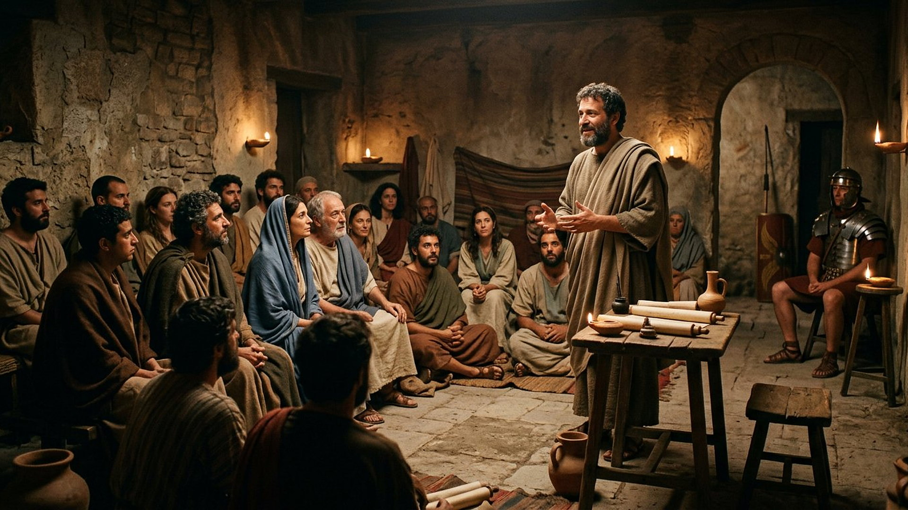
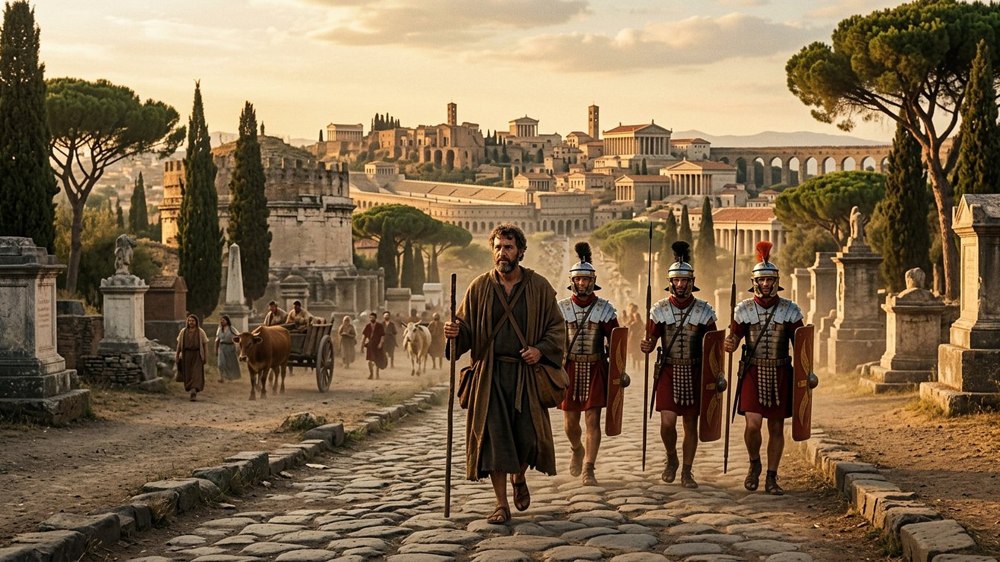

Salle 61 — Actes 27-28 ACCOMPLIE
Paul à Rome : « sans entrave »
« Paul demeura deux ans entiers dans une maison qu’il avait louée. Il recevait tous ceux qui venaient le voir, prêchant le royaume de Dieu […] avec une entière liberté, et sans obstacle. » — Actes 28:30-31 (d’après Segond 1910)
Reconstitution numérique — le naufrage près de Mélite : tous les passagers gagnent la terre, sur des planches ou des débris du navire.
Le prisonnier qui voulait voir Rome
Des années avant son arrestation, Paul écrivait déjà aux chrétiens de Rome : « je désire vivement vous voir », espérant passer par leur ville vers l’Espagne (Romains 1:11 ; 15:23-24). Il y viendra — mais en prisonnier. Arrêté à Jérusalem, entendu à Césarée (translittération : Kaisáreia), il use de son droit de citoyen romain : « j’en appelle à César » (translittération latine : Caesar, l’empereur). Le voyage devient une odyssée : tempête de quatorze nuits, navire brisé près d’une île nommée Mélite, trois mois d’hivernage, puis la remontée de l’Italie et l’entrée dans Rome, où ses frères viennent à sa rencontre jusqu’au Forum d’Appius (translittération latine : Forum Appii) et aux Trois Tavernes (translittération latine : Tres Tabernae). Dans la lecture retenue par ce musée, ce dernier voyage est l’arrivée paradoxale d’un captif envoyé annoncer une liberté : les Actes se referment, non sur un verdict, mais sur une porte de maison ouverte pendant deux ans.
Le musée suit ce récit jusqu’à sa dernière phrase sans lui inventer une suite : ni acquittement, ni martyre ne sont racontés par les Actes. La tradition postérieure sur la mort de Paul à Rome, le lieu débattu du naufrage et la datation discutée des lettres dites « de la captivité » sont présentés ci-dessous en débat.
Le récit en cinq temps
De l’appel à l’empereur à la maison louée, avancez d’une station à l’autre.

Le banc des preuves : une île disputée, une fin ouverte
DÉBATTU
Mélite : Malte, ou Mljet plus au nord ? (EV-70)
Vérifié : les Actes nomment l’île du naufrage « Mélite » (en grec, translittération : Melítē), peuplée de « barbares » — au sens antique de populations ne parlant ni grec ni latin —, et la tradition maltaise désigne depuis des siècles la baie dite de Saint-Paul, au nord de Malte. Débattu : une autre île de l’Adriatique portait le même nom, Mljet, près de la côte dalmate, et certains spécialistes y placent le naufrage en lisant autrement la mer « d’Adria » des Actes et les vents du récit. Navigation, géographie et usages anciens du nom s’opposent sans qu’aucune épave puisse être rattachée au navire de Paul : la salle présente les deux candidatures, la tradition maltaise et son alternative, sans identification tranchée.
LECTURE PROPHÉTIQUE
Le dernier mot des Actes : « sans obstacle »
Le livre des Actes se termine sur un adverbe grec que les traducteurs peinent à rendre : akōlýtōs (translittération), « sans entrave, sans empêchement ». Le prisonnier est gardé, mais la parole circule ; l’homme attend un jugement, mais la maison reçoit « tous ceux qui venaient ». Pour le musée, cette fin suspendue est un geste d’écriture : le récit commencé à Jérusalem dans une chambre haute (salle 45) s’achève à Rome, centre du monde antique, avec un message toujours en route — la suite appartient aux lecteurs, non à Luc, qui ne raconte ni le procès ni la mort de son héros.
DÉBATTU
Après les deux ans : libération, Espagne, martyre ?
Les Actes s’arrêtent ; la suite se reconstruit avec débat. La première lettre attribuée à Clément de Rome (translittération : Klḗmēs), vers la fin du Iᵉʳ siècle, dit Paul parvenu « à la limite de l’Occident » et mort en témoin — base de la tradition d’un martyre romain sous Néron (translittération latine : Nero), sans récit détaillé. La lettre aux Romains projetait l’Espagne (15:24), et une tradition postérieure l’y envoie après une libération ; les lettres dites « de la captivité » (Éphésiens, Philippiens, Colossiens, Philémon) sont elles-mêmes situées à Rome, à Césarée ou à Éphèse selon les spécialistes. La salle s’arrête donc où Luc s’arrête, en signalant ces reconstructions comme débattues.
Quatre clés pour bien lire les deux ans de Rome
1. Un citoyen qui utilise le droit de l’Empire
L’apôtre des nations avance aussi en juriste : citoyen romain de naissance, il échappe à une flagellation illégale (Actes 22:25), refuse un transfert piégé et en appelle à l’empereur (25:11), forçant sa propre déportation vers la capitale qu’il voulait visiter en missionnaire. Les Actes ne montrent pas la foi contre Rome, mais un fidèle qui fait jouer les institutions, servi par des centurions souvent bienveillants — de Corneille (salle 45) au centurion Jules (translittération latine : Julius), qui sauvera Paul des soldats voulant tuer les prisonniers pendant le naufrage.
2. Le capitaine malgré lui du navire perdu
Pendant la tempête, le prisonnier devient l’homme de sang-froid du bord : il avertit en vain avant l’appareillage, rassure les 276 passagers, impose le repas avant l’échouage et obtient du centurion que nul ne soit tué. Les spécialistes remarquent la précision nautique du récit — sondes, ancres, allègement du navire —, lue tantôt comme journal de bord d’un compagnon de voyage, tantôt comme composition soignée ; les deux lectures s’accordent au moins sur la figure : celui qui n’a aucun commandement tient le navire moral jusqu’au bout.
3. « Il prit courage » : les frères avant la ville
La première chose que Rome fait à Paul, ce ne sont ni ses monuments ni son empereur : ce sont des chrétiens inconnus qui marchent des dizaines de kilomètres sur la voie Appienne pour venir à sa rencontre, jusqu’au Forum d’Appius et aux Trois Tavernes. Luc note la réaction du prisonnier : « il rendit grâces à Dieu, et prit courage » (28:15). Le musée retient cette escorte : à l’entrée de la capitale du monde, l’apôtre épuisé est porté par des frères dont l’histoire n’a pas gardé les noms.
4. Une maison louée, pas une prison fermée
La détention romaine des Actes est une résidence surveillée productive : Paul loue un logement, paie ses frais — la tradition des lettres le montre aussi travaillant et recevant de l’aide — et y tient audience pendant deux ans entiers, d’abord auprès des responsables juifs de la ville, puis « à tous ». Le débat ancien se déplace alors : ce n’est plus le voyage qui est raconté, mais une parole installée. Le musée oppose cette maison ouverte aux cellules de Philippes ou de Jérusalem : la captivité change de forme, jamais de fonction.
Prescience n’est pas fatalité — captif, et pourtant en route
Paul avait annoncé Rome comme une étape vers l’Espagne ; il y arrive enchaîné, après un naufrage, escorté comme un accusé. Aucun plan ne survit intact à la tempête — et pourtant l’homme, à chaque étape, choisit : appeler à César, rester dans le navire, nourrir les passagers, recevoir les visiteurs. Arrivé plus tard et autrement que prévu, le prisonnier transforme la résidence surveillée en lieu d’annonce : ce n’était pas le voyage qu’il avait dessiné, mais c’est bien lui qui l’a habité, librement, jusqu’à la dernière phrase.

Salle 59 : le même homme, trente ans plus tôt, sur la route de Damas · Salle 45 : Jérusalem, l’autre extrémité du livre des Actes · Salle 39 : la résurrection dont Paul se dit le dernier témoin
Écouter la salle
Transcription de la narration
Bienvenue dans cette nouvelle salle. Vous verrez d’abord une côte battue par la tempête et un navire en perdition, puis une route antique bordée de monuments funéraires, et enfin une réunion du soir dans une maison. Je vous souhaite une très bonne visite du musée. La visite avance en cinq étapes courtes. Prenez le temps d’observer chaque image et de lire les panneaux : ils présentent un long voyage sous escorte, une île où l’on débat encore du lieu du naufrage, et une parole qui continue de circuler. Merci de votre attention.